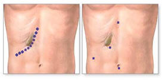
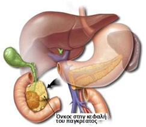

Οι χειρουργικές παθήσεις των χοληφόρων, του ήπατος, του παγκρέατος, αλλά και του σπληνός παραδοσιακά περιγράφονται ως ενιαίο κεφάλαιο της χειρουργικής. Αυτό οφείλεται στο ότι αποτελούν ένα στενά συνδεδεμένο ανατομικό σύνολο οργάνων της άνω κοιλίας, τόσο από άποψη χειρουργικής ανατομίας, όσο και από άποψη λειτουργικής φυσιολογίας.
Από αρκετούς μάλιστα θεωρείται πως η αντιμετώπιση των νεοπλασματικών παθήσεων του ανατομικού και λειτουργικού αυτού συνόλου, αποτελεί ίσως την κορωνίδα της ογκολογικής χειρουργικής του πεπτικού, αφού συνήθως απαιτείται η διενέργεια των πιο σύνθετων και εξειδικευμένων επεμβάσεων. Η διαγνωστική διερεύνηση των οργάνων αυτών περιλαμβάνει το υπερηχογράφημα, την αξονική και μαγνητική τομογραφία, ενώ σημαντικό ρόλο διαδραματίζουν η διαγνωστική λαπαροσκόπηση και οι διεγχειρητικές βιοψίες, που αρκετά συχνά προσδιορίζουν τη φύση των υποκείμενων παθήσεων.
Χοληφόρα

Με τον όρο χοληφόρο δένδρο ορίζουμε το σύνολο των αυλοφόρων σχηματισμών, εντός και εκτός του ήπατος, που μεταφέρει τη χολή προς το έντερο, με σκοπό την καλύτερη πέψη των τροφών. Οι συχνότερες παθήσεις των χοληφόρων σχετίζονται με τη δημιουργία λίθων σε αυτά, μάλιστα κατά συντριπτική πλειοψηφία εντός της χοληδόχου κύστεως. Η χοληδόχος κύστη βρίσκεται στην κάτω επιφάνεια του δεξιού λοβού του ήπατος. Είναι ένα κυστικό ρεζερβουάρ, που παρεμβάλλεται στο δικτύου των χοληφόρων και συλλέγει μικρή ποσότητα από τη χολή που παράγεται στο ήπαρ, με σκοπό να την απελευθερώσει στο έντερο κατά τη διάρκεια των γευμάτων. Εντός της χοληδόχου κύστεως δημιουργούνται ιδιαίτερα συχνά λίθοι, με αποτέλεσμα τον έντονο πόνο στην περιοχή του δεξιού υποχονδρίου, αλλά και πολλές φορές φλεγμονώδεις επιπλοκές όπως χολοκυστίτιδα. Επιπλέον, αν κάποιος λίθος μετακινηθεί εκτός αυτής, είναι δυνατό να προκαλέσει απόφραξη του χοληφόρου δένδρου με επακόλουθη δυσλειτουργία του ήπατος, αλλά και πρόκληση παγκρεατίτιδας.

Η θεραπεία της χολολιθίασης είναι αποκλειστικά χειρουργική. Εφαρμόζονται η λαπαροσκοπική και η ρομποτική χειρουργική, ενώ οι ανοικτές επεμβάσεις έχουν ουσιαστικά καταργηθεί, αφού η ανάγκη μετατροπής της επέμβασης σε ανοικτή κυμαίνεται σε ποσοστά κάτω του 1%. Η εφαρμογή των τεχνικών αυτών έχει απλοποιήσει την επέμβαση της χολοκυστεκτομής κατά πολύ, μετατρέποντάς την σε μια επέμβαση ανώδυνη, ιδιαίτερα καλά ανεκτή από τους ασθενείς, που απαιτεί μόλις ημερήσια νοσηλεία. Αυτό βέβαια είναι εφικτό από εξειδικευμένες χειρουργικές ομάδες, από τις οποίες παρέχεται επιπλέον η δυνατότητα της λαπαροσκοπικής ή και ρομποτικής αφαίρεσης λίθων που βρίσκονται και εκτός της χοληδόχου κύστεως – Διερεύνηση χοληδόχου πόρου.
Στις περιπτώσεις νεοπλασματικών παθήσεων των χοληφόρων (χολαγγειοκαρκίνωμα), εφαρμόζονται συνήθως σύνθετες χειρουργικές επεμβάσεις, σχεδόν πάντα με ανοικτή προσπέλαση, που έχουν ως σκοπό την αφαίρεση του παθολογικού τμήματος των χοληφόρων, την εκτροπή της χολής από τη φυσιολογική της πορεία και την αποχέτευσή της προς το έντερο διαμέσων χολοπεπτικών αναστομώσεων (μεταξύ τμήματος του χοληφόρου δένδρου και του εντέρου).
Ήπαρ

Το ήπαρ αποτελεί το μεγαλύτερο αδένα του ανθρώπινου σώματος. Βρίσκεται στο άνω μέρος της κοιλιάς, κυρίως προς τα δεξιά, αμέσως κάτω από το διάφραγμα, ενώ συμμετέχει με πολυποίκιλους μηχανισμούς στη μεταβολική δραστηριότητα του οργανισμού. Τα περισσότερα από τα ενδοκοιλιακά όργανα έχουν φλεβική αποχέτευση μέσω της πυλαίας φλέβας προς το ήπαρ, μεταφέροντας κατ΄ αυτόν τον τρόπο τα απορροφούμενα συστατικά των τροφών σε αυτό. Παράγει ποικιλία ουσιών και ορμονών, παραγόντων πήξης, καθώς και τη χολή που συμμετέχει στην πέψη.
Οι κυριότερες χειρουργικές παθήσεις του ήπατος αφορούν την ανάπτυξη νεοπλασμάτων καλοηθών ή και κακοηθών. Οι συχνότεροι καλοήθεις όγκοι του ήπατος είναι κατά σειρά συχνότητας: τα αιμαγγειώματα, η εστιακή οζώδης υπερπλασία, τα αδενώματα και η αναγεννητική οζώδης υπερπλασία. Όλες αυτές οι καταστάσεις αντιμετωπίζονται ως επί το πλείστο με τις αρχές της ελάχιστα παρεμβατικής χειρουργικής, χρησιμοποιώντας τη λαπαροσκοπική και τη ρομποτική χειρουργική ή και σε συνδυασμό με τεχνικές εμβολισμού, προσφέροντας ανώδυνη και αποτελεσματική θεραπεία. Οι συχνότεροι κακοήθεις όγκοι του ήπατος είναι μεταστατικής αιτιολογίας, ενώ ακολουθούν αυτοί που προέρχονται εξαρχής από το ήπαρ (πρωτοπαθείς). Γενικά μπορούμε να πούμε πως σε μικρούς σε μέγεθος καρκινικούς όγκους μπορούμε με άνεση να εφαρμόσουμε τη λαπαροσκοπική και ρομποτική χειρουργική, πετυχαίνοντας είτε εκτομή της παθολογικής περιοχής, είτε καταστροφή της με χρήση ραδιοκυμάτων, σε πολυεστιακή νόσο. Αντίθετα σε περιπτώσεις εκτεταμένων νεοπλασμάτων, που απαιτούν την αφαίρεση μεγάλων τμημάτων του οργάνου, προτιμάμε την ανοικτή χειρουργική, που φαίνεται να υπερτερεί προς το παρόν στους μεγάλους καρκίνους του ήπατος.
Πάγκρεας

Το πάγκρεας αποτελεί έναν από τους σημαντικότερους αδένες του ανθρώπινου σώματος. Παράγει μεγάλο αριθμό ορμονών, που έχουν κυρίως σχέση με τη ρύθμιση της συγκέντρωσης του σακχάρου στο αίμα (ινσουλίνη και γλουκαγόνο). Εκτός αυτών παράγει και σημαντική ποσότητα πεπτικών ενζύμων, που είναι απαραίτητα για τη διάσπαση και απορρόφηση των τροφών. Οι χειρουργικές παθήσεις του οργάνου περιλαμβάνουν την αντιμετώπιση των κυστικών βλαβών που προκαλεί η παγκρεατίτιδα (ψευδοκύστεις), καθώς και των νεοπλασμάτων αυτού, που συνήθως είναι κακοήθη. Το πάγκρεας βρίσκεται στον οπισθοπεριτοναϊκό χώρο, δηλαδή αμέσως μπροστά από τη σπονδυλική στήλη και πίσω από τα περισσότερα ενδοκοιλιακά σπλάχνα.

Η ανατομική του θέση κάνει την προσέγγισή του ιδιαίτερα δυσχερή και γι΄ αυτό η χειρουργική του θα πρέπει να αποτελεί αντικείμενο αποκλειστικά και μόνο εξειδικευμένων ογκολογικών χειρουργικών ομάδων. Οι καλοήθεις παθήσεις του οργάνου, καθώς και οι μικρές και πρώιμες κακοήθεις που εντοπίζονται στο περιφερικό του τμήμα, κοντά στο σπλήνα, είναι δυνατό να αντιμετωπιστούν με λαπαροσκοπική και ρομποτική χειρουργική. Τα τελευταία χρόνια έχει επιτευχθεί τεράστια πρόοδος στην ελάχιστα επεμβατική χειρουργική του παγκρέατος και μπορούμε να πούμε πως οι εξειδικευμένες λαπαροσκοπικές και ογκολογικές χειρουργικές ομάδες έχουν αντικαταστήσει μεγάλο μέρος της ανοικτής χειρουργική του οργάνου με τη λαπαροσκοπική και ρομποτική χειρουργική. Αντίθετα, σε μεγαλύτερα νεοπλάσματα και σε αυτά που εντοπίζονται στο κεντρικό του τμήμα, η ανοικτή χειρουργική προσπέλαση είναι μονόδρομος, αφού φαίνεται να αντιμετωπίζει αποτελεσματικότερα αυτές τις παθήσεις.
Σπλήνας

Ο σπλήνας είναι ένα όργανο που βρίσκεται στην αριστερή άνω κοιλιακή χώρα, αμέσως κάτω από το διάφραγμα και σε πολύ στενή σχέση με την ουρά του παγκρέατος. Συμμετέχει με πολλούς μηχανισμούς στην αιμοποίηση, ενώ αποτελεί και το πιο εύθρυπτο και ευαίσθητο στη μηχανική καταπόνηση, όργανο της κοιλιάς.
Οι περιπτώσεις της τραυματική ρήξης και αιμορραγίας του οργάνου αποτελούν τη συχνότερη ένδειξη για την αφαίρεσή του. Παρόλα αυτά ,ο σπλήνας αφαιρείται και σε ποικίλες άλλες παθολογικές καταστάσεις, κυρίως αιματολογικής φύσεως όπως: η ιδιοπαθής και η θρομβωτική θρομβοπενική πορφύρα, η μυελοειδής μεταπλασία, η κληρονομική σφαιροκυττάρωση, η δρεπανοκυτταρική και η μεσογειακή αναιμία, καθώς και η αυτοάνοση αιμολυτική αναιμία. Επίσης ενδείξεις σπληνεκτομής είναι τα νεοπλάσματα και το λέμφωμα του σπληνός, ο δευτεροπαθής υπερσπληνισμός, καθώς και το σπληνικό απόστημα .

Η αφαίρεση του σπληνός γίνεται πλέον λαπαροσκοπικά ή και ρομποτικά στις περισσότερες περιπτώσεις προγραμματισμένης επέμβασης, πετυχαίνοντας όλα τα πλεονεκτήματα της ελάχιστα επεμβατικής χειρουργικής. Εξαίρεση αποτελούν οι παθολογικές καταστάσεις του οργάνου που προκαλούν πολύ μεγάλη αύξηση των διαστάσεών του, καθώς και οι περιπτώσεις ραγδαίας αιμορραγίας μετά από τραυματική κάκωση.